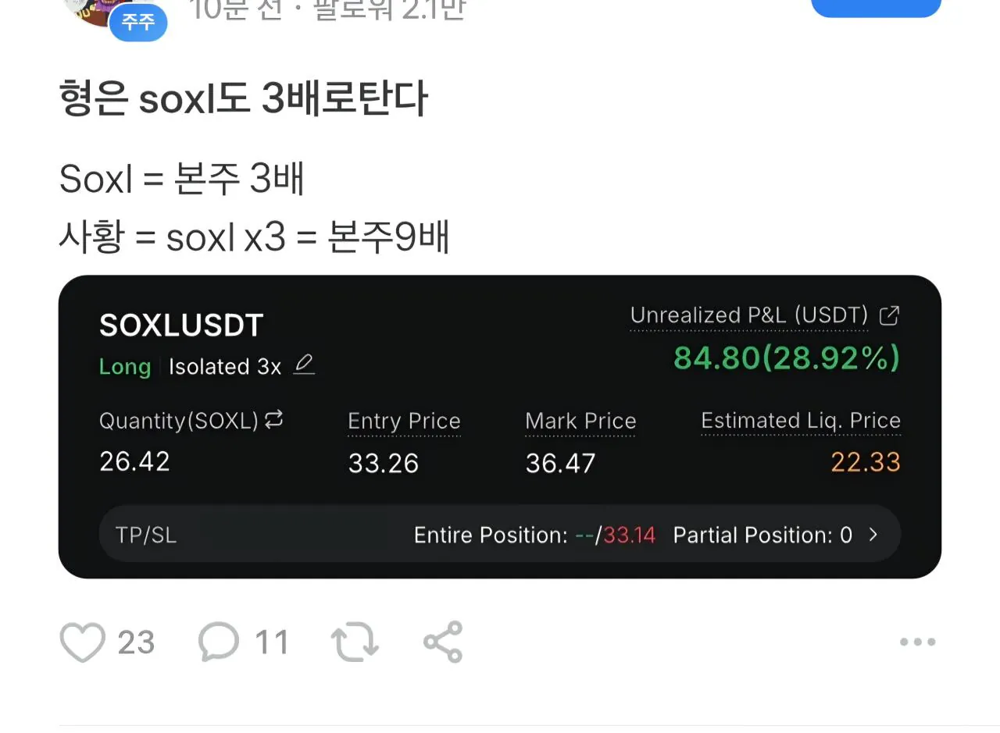

필라델피아 반도체지수를 추종하는 ETF인 SOXX의 상승률을 3배로 추종하는 SOXL을 3배로 추종하는 SOXLUSDT라고함
SOXX가 11퍼 빠지면 -99퍼맞는 종목 ㄷㄷㄷㄷ

필라델피아 반도체지수를 추종하는 ETF인 SOXX의 상승률을 3배로 추종하는 SOXL을 3배로 추종하는 SOXLUSDT라고함
SOXX가 11퍼 빠지면 -99퍼맞는 종목 ㄷㄷㄷㄷ
저런거 해서 승리 열번하다가 패 한번에 바로깡통
20배도 가능함 3배는 저배율로하는거네
9배인건가.
soxl 42불에 사고 7불 보고 가슴아팟다가 60불즈음에 팔았더니
270불까지 갔었나. 가슴이 아팟는데 얼마전에 보내 30불대? 응?
정보)50배까지가능 =150배
정보) 나 저번에 600정도 청산ㅋㅋ
젠슨황 첩 하나 추가로 발견되면 상폐하는거 아니냐
이거 선물이면 원금보다 크게 손해 나는 거 아니냐?
etf는 상품이고 선물은 1:1 계약이라
개념은 좀 다르지
저건 코인선물이라...
etf면 그냥 한주당 얼마씩 사는거니까 선물 추종해도 그건 그냥 시세일뿐이고 원금보다 더 갈리진않지
다만 빠르게 0에 도달할뿐
선물도 보통은 빚이 안생겨 증거금 다 깎이기전에 증권사에서 반대매매 해버리거든
근데 휴일때 크게 갭상, 갭락하면서 한순간에 손실이 증거금을 넘어가면 이제 빚이 생기는거지
죽음의 이지선다 홀짝게임 뭐지요
-11프로 한방에 청산이네
속슬 10배로 했었는데 단타ㅋㅋㅋ
경마나 경륜이 차라리 나아보이네ㅋㅋㅋ